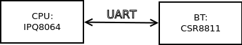

Openwrt 15.05 add bluez support
Table of Contents
1 reference
2 platform

Figure 1: Bluetooth Module in my board
As shown above, bt module is connected to cpu via UART.
3 add bluez support
3.1 select necessary packages
| package | description |
|---|---|
| kmod-bluetooth | Kernel support for Bluetooth devices |
| bluez-libs | Bluetooth library. |
| bluez-utils | Bluetooth utilities. |
| dbus | Simple interprocess messaging system (daemon), dependency of bluez-utils |
before make, make sure the packages have been selected in .config
CONFIG_PACKAGE_bluez-libs=y
CONFIG_PACKAGE_bluez-utils=y
CONFIG_PACKAGE_dbus=y
CONFIG_PACKAGE_libdbus=y
3.2 compile && upgrade
After compile, do upgrade
3.3 manually test bluetooth in board
After login to the board:
- attach serial devices via UART HCI to BlueZ stack
hciattach -n /dev/ttyHS0 bcsp 115200 &
- print name and basic information about all the bluetooth devices
hciconfig
hci0: Type: BR/EDR Bus: UART
BD Address: 00:02:5B:00:A5:A5 ACL MTU: 310:10 SCO MTU: 64:8
UP RUNNING PSCAN
RX bytes:3613 acl:0 sco:0 events:108 errors:0
TX bytes:4382 acl:0 sco:0 commands:113 errors:0
- activate a device
hciconfig hci0 up
- Display local devices
hcitool dev
- scan for remote devices
hcitool scan
3.4 troubleshoot issues
If bluetooth device doesn't initialize correctly and doesn't show up while running hcitool dev command, try reinitializing bluetooth stack:
hciconfig hci0 reset
hciconfig
hciconfig hci0 up
/etc/init.d/bluetoothd restart